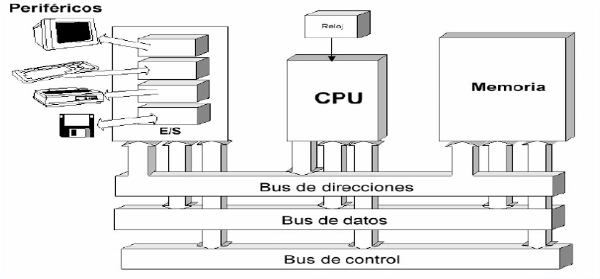

Es una arquitectura de computadoras basada en la descrita en 1945 por el matemático y físico John Von Neumann y otros.
Este describe una arquitectura de diseño para un computador digital electrónico con partes que constan de una unidad de procesamiento que contiene una unidad aritmético lógica
y registros del procesador, una unidad de control que contiene un registro de instrucciones y un contador de programa, una memoria para almacenar tanto datos como instrucciones,
almacenamiento masivo externo, y mecanismos de entrada y salida.
La arquitectura de Von Neuman se compone de tres elementos:
La unidad Central de Procesamiento(CPU, por sus siglas en ingles) que es considerada como el cerebro y corazón del computador.
La memoria, que es donde datos y programa es almacenado.
Las interfaces de entrada y salida(I/O). Destinadas a liberar de trabajo a la CPU en la comunicación con dispositivos de entrada, salida y entrada-salidas.

Arquitectura Harvard
El modelo de arquitectura de Harvard, proviene del Harvard Mark I. No se utiliza habitualmente en computadores de propósito general,
sino que se utiliza en computadores para aplicaciones específicas. Se utilizan dispositivos de almacenamiento (memorias) separados para las instrucciones y los datos,
y tiene dos sistemas completos de buses, uno para datos y otro para instrucciones.
Esta arquitectura perite llevar simultáneamente datos e instrucciones por lo que permite mayor rapidez.